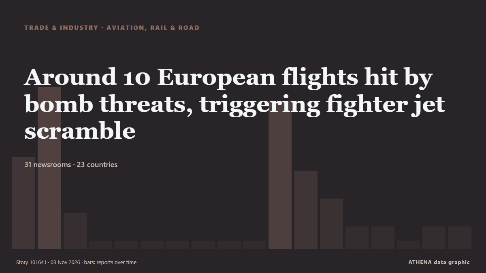

Around 10 European flights hit by bomb threats, triggering fighter jet scramble

LONDON: About 10 European flights were targeted by bomb threats on Tuesday, forcing the brief closure of a Warsaw airport and the scrambling of air force planes in Rome, authorities said. από New Straits Times
Αναφέρθηκε ανεξάρτητα από 31 μέσα σε 23 χώρες από τις 2 Νοε, πρώτο το Daily News Hungary· η κάλυψη κορυφώνεται. Το ATHENA εκτιμά τον κίνδυνο μέτριο (3.6/10), κυρίως λόγω της σοβαρότητάς του και της εμβέλειάς του. Βεβαιότητα 90% (υψηλή): το επιβεβαιώνουν 31 ανεξάρτητα μέσα, μέση αξιοπιστία 72%. Μέσα ανά χώρα: Ηνωμένο Βασίλειο (9), Βουλγαρία (3), Αζερμπαϊτζάν (2). Κάλυψη: 2 Νοε έως 3 Νοε, 34 ώρες.
Γιατί έχει σημασία: Οι διαταραχές στο εμπόριο, τη βιομηχανία ή τις υποδομές διαδίδονται στις αλυσίδες εφοδιασμού και αλλάζουν κόστη και χρόνους παράδοσης μακριά.
Τι άλλαξε: 22 νέες αναφορές από 21 μέσα στο 24ωρο έως 3 Νοε.
Πρώτη διατύπωση: Wizz Air flight makes emergency landing at Budapest Airport due to bomb threat
Οι τίτλοι των ειδήσεων παρουσιάζονται στα αγγλικά, όπως δημοσιεύτηκαν.
Με μια ματιά
Επιλέγεται, βαθμολογείται και γράφεται από τη δημοσιευμένη μεθοδολογία του ATHENA. Κανένας συντάκτης δεν παρεμβαίνει σε μεμονωμένα γεγονότα. Πώς παράγεται ›
| 02 Nov 12:34 UTC | 6 |
|---|---|
| 02 Nov 14:34 UTC | 11 |
| 02 Nov 16:34 UTC | 2 |
| 02 Nov 18:34 UTC | 0 |
| 02 Nov 20:34 UTC | 0 |
| 02 Nov 22:34 UTC | 0 |
| 03 Nov 00:34 UTC | 0 |
| 03 Nov 02:34 UTC | 0 |
| 03 Nov 04:34 UTC | 0 |
| 03 Nov 06:34 UTC | 0 |
| 03 Nov 08:34 UTC | 10 |
| 03 Nov 10:34 UTC | 5 |
| 03 Nov 12:34 UTC | 3 |
| 03 Nov 14:34 UTC | 1 |
| 03 Nov 16:34 UTC | 1 |
| 03 Nov 18:34 UTC | 0 |
| 03 Nov 20:34 UTC | 1 |
| 03 Nov 22:34 UTC | 1 |
| 02 Nov 13:56 UTC | 2.1 |
|---|---|
| 02 Nov 14:19 UTC | 3.7 |
| 02 Nov 23:11 UTC | 3.5 |
| 03 Nov 16:29 UTC | 3.6 |
| 03 Nov 22:53 UTC | 3.6 |
Γιατί αυτοί οι αριθμοί
Σημασία
Κίνδυνος
Βεβαιότητα
Η κάλυψη — ποιος το ανέφερε και πότε
ο τίτλος όπως δημοσιεύτηκε · ανοίγει το πρωτότυπο- Daily News Hungary · ΟυγγαρίαWizz Air flight makes emergency landing at Budapest Airport due to bomb threat
- Novinite · ΒουλγαρίαBomb Threat Forces London-Sofia Flight to Divert to Budapest
- Xinhua (English) — page reader · ΚίναUrgent: Hungarian fighter jets escort passenger plane after bomb threat forces it to divert to Budapest:official
- APA (English) · ΑζερμπαϊτζάνWizz Air flight diverts to Budapest due to bomb threat, minister says
- Cyprus Mail · ΚύπροςWizz Air flight diverts to Budapest due to bomb threat
- Evening Standard (London) · Ηνωμένο ΒασίλειοWizz Air flight from London airport diverted after bomb threat prompts emergency landing
- BBC News · Ηνωμένο ΒασίλειοWizz Air flight from Luton in emergency landing after bomb threat
- Anadolu Agency (English) · ΤουρκίαWizz Air flight from London to Bulgaria diverted over bomb threat
- MyLondon · Ηνωμένο ΒασίλειοBomb threat forces passenger plane from London to divert to Budapest
- BTA (English) · ΒουλγαρίαUPDATED Wizz Air London-Sofia Flight to Resume Journey after Bomb Threat Checks Find No Threat
- Gulf News · Ηνωμένα Αραβικά ΕμιράταWizz Air flight makes emergency landing in Budapest after bomb threat
- Irish Mirror · ΙρλανδίαFlight from London diverted mid-air after bomb threat as fighter jet scrambled
- TASS (English) · ΡωσίαWizz Air flight from UK to Bulgaria grounded in Hungary after reported bomb threat
- Punch · ΝιγηρίαBomb threat forces London-Sofia flight diversion to Hungary
- News of Bahrain · ΜπαχρέινWizz Air Flight Diverted to Budapest After Mid-Air Bomb Threat
- MyJoyOnline · ΓκάναWizz Air flight from Luton in emergency landing after bomb threat
- Manchester Evening News · Ηνωμένο ΒασίλειοWizz Air flight from UK forced to divert after bomb threat
- Simple Flying · Ηνωμένες ΠολιτείεςWizz Air Flight From London Diverts Due To Bomb Threat
- Times of India · ΙνδίαWarsaw-Modlin airport reopens after bomb threat triggered temporary closure
- Asharq Al-Awsat (English) · Σαουδική ΑραβίαBomb Threat Alert Forces Passenger Plane from London to Make Unplanned Landing in Poland
- APA (English) · ΑζερμπαϊτζάνBomb threat reported on plane flying from London to Warsaw
- MyLondon · Ηνωμένο ΒασίλειοHeathrow flight carrying 180 passengers diverted after bomb threat
- The Guardian · Ηνωμένο ΒασίλειοSeven reported bomb threats against European flights confirmed as false alarms – as it happened
- Anadolu Agency (English) · ΤουρκίαPolish airport closes after bomb threat involving flight from London
- Irish Mirror · ΙρλανδίαHeathrow flight with 181 passengers diverted after reported bomb threat
- Cyprus Mail · ΚύπροςThree European flights hit by bomb threats in two days
- The Straits Times · ΣιγκαπούρηBomb threats on flights, cruise ship cause disruption in Europe, no devices found
- ABC News Australia · ΑυστραλίαSeven flights and cruise ship disrupted in Europe by bomb threats
- Evening Standard (London) · Ηνωμένο Βασίλειο'Malicious hoax': Heathrow flight among seven planes targeted by suspected bomb threats across Europe
- WalesOnline · Ηνωμένο ΒασίλειοHeathrow flight with 181 passengers diverted after reported bomb threat
- The Independent · Ηνωμένο ΒασίλειοFlight bomb threats latest: Ryanair planes searched as several European flights targeted by threats
- The Jerusalem Post · ΙσραήλLondon plane lands in Warsaw-Modlin airport after explosive device reported on board
- Nile Post · ΟυγκάνταFlights from UK airports among three targeted by bomb threats
- BTA (English) · ΒουλγαρίαAircraft Being Inspected at Sofia Airport after Bomb Threat
- to vima · ΕλλάδαFour European Flights Hit by Suspected Bomb Threats in One Day
- Stuff · Νέα ΖηλανδίαFalse bomb threats disrupt flights across Europe
- NDTV · ΙνδίαAirlines Across Europe Receive Bomb Threats, Disrupting Air Travel
- MyJoyOnline · ΓκάναSeven flights across Europe targeted by suspected bomb threats
- New Straits Times · ΜαλαισίαAround 10 European flights hit by bomb threats, triggering fighter jet scramble